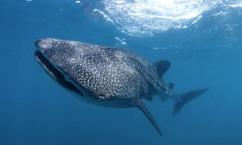
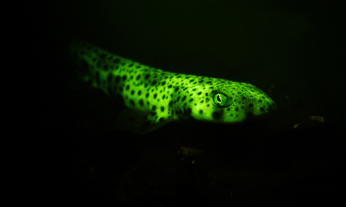
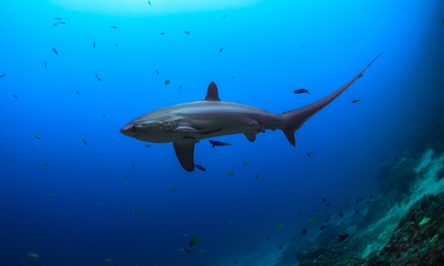
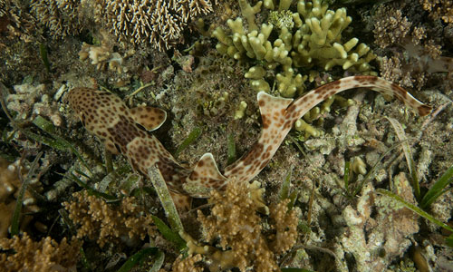
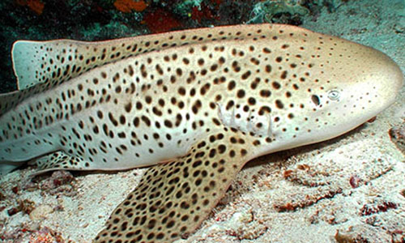
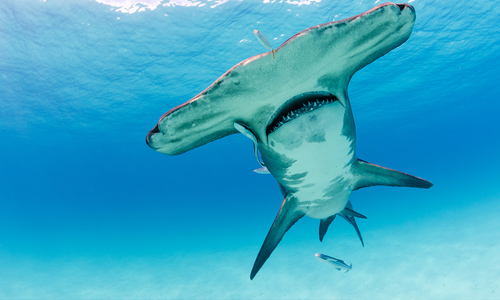
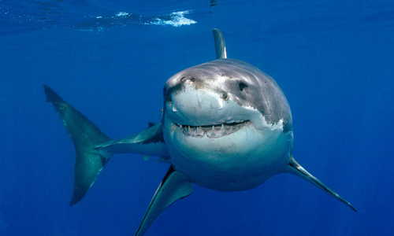

ESPECIES: TIBURONES
Los tiburones son seres mitológicos e inquietantes, peces extraordinarios de nadar sigiloso y muy antiguos. Han sobrevivido millones de años, incluso a los dinosaurios. Y ahora, el ser humano está siendo responsable de su desaparición en unos pocos siglos. Las poblaciones mundiales de tiburones y rayas de alta mar han disminuido un 71% desde la década de 1970. ¡Actualmente el 36% de las 1 200 especies de tiburones y rayas están en riesgo de extinción! Se calcula que cada año mueren 100 millones de tiburones y rayas a causa de la sobrepesca y las capturas accidentales en todo el mundo. Y España tiene que mucho ver en estas dramáticas cifras, que han llevado a algunas especies a estar catalogadas en peligro de extinción. En un informe de WWF publicado en 2021, se demuestra que comemos más carne de tiburón y de raya de lo que pensábamos, y este es un hecho generalizado donde Europa no es una excepción. La carne de tiburón y raya cruza más de 200 fronteras y España desempeña un papel clave como comercializador y consumidor. Es necesario mejorar la gestión, y hacerlo de forma urgente, una mayor fiscalización y más transparencia para hacer frente al rápido declive sufrido en años recientes por las poblaciones de los tiburones y las rayas.
Tiburón Ballena
¡El tiburón ballena es el pez más grande del mundo! Puede medir más de 12 metros de largo. Podemos verlo en aguas Canarias. Por ejemplo, en el Mar de las Calmas de El Hierro.
Tiburones Linterna
Los tiburones "linterna" (Scyliorhinus canicula), que habitan las zonas mesopelágicas (aguas profundas) por debajo de los 200 metros, en total oscuridad, pueden generar luz gracias a los fotoporos, pequeños poros en su piel. Algunas especies de tiburones tienen la capacidad de absorber la luz azul del océano y volver a emitirla como fluorescencia verde (biofluorescencia). El secreto vuelve a estar en su piel llena de pequeños fluoróforos que absorben y emiten la luz. Los científicos creen que los tiburones utilizan la biofluorescencia para camuflarse y comunicarse entre especies.
Tiburón Zorro
El tiburón zorro pelágico (Alopias pelagicus) tiene una impresionante cola en forma de látigo. Estos tiburones alcanzan casi los 6 metros de longitud y su cola suele tener la longitud de todo el cuerpo, o más. Utilizan su cola para cazar. Van nadando a gran velocidad hacia cardúmenes de sardinas u otros peces pequeños y luego los golpean con la cola a modo de látigo para aturdir a sus presas.
Pintarroja Colilarga Ocelada
¡Un pez que camina! Se trata de la pintarroja colilarga ocelada (Hemiscyllium ocellatum), una pequeña especie de tiburón que habita en los arrecifes de coral poco profundos que usa sus aletas emparejadas para gatear sobre el coral cuando caza.
Tiburón Cebra
El tiburón cebra (Stegostoma tigrinum) es una especie pequeña que habita en arrecifes de coral poco profundos y ¡puede clonarse! ¿Cómo? Pueden reproducirse mediante el proceso de partenogénesis en el que la hembra produce crías sin que un macho la fertilice. A través de esta forma de reproducción asexual, las hembras de tiburón cebra producen descendientes genéticamente idénticos a ella.
Tiburones Martillo
Los tiburones martillo, uno de los tiburones más emblemáticos de nuestro planeta azul, obtienen su nombre de su inusual cabeza en forma de martillo. Pero hay un beneficio más crucial que de esa cabeza que el reconocimiento público y es ¡su súper vista! Gracias a este rasgo anatómico consiguen una visión binocular mejorada en comparación con la mayoría de las especies de tiburones. Su rango de visión horizontal es mucho mayor; también tienen una visión vertical completa de 360 ̊.
Tiburón Globo
El tiburón globo (Cephaloscyllium) se hincha cuando está en peligro hasta duplicar su tamaño y parecen mucho más grandes de lo que realmente son. Con alrededor de 90 cm de longitud, estos tiburones bastante pequeños tienen dos estómagos diferentes: inhalan agua de mar e inflan uno de estos estómagos para hacerse grandes, una vez pasado el peligro, expulsan el agua volviendo a su tamaño original, ¡fascinante!

Tiburón Blanco
No podíamos terminar esta lista sin nombrar al gran tiburón blanco (Carcharodon carcharias), que el cine de terror de Steven Spielberg hizo famoso. Te explicamos por qué se merece el título de "gran depredador". Su gran tamaño (puede llegar a los 6 metros) y sus 300 dientes le permiten cazar animales bastante grandes (como focas o delfines). A pesar de esa potente dentadura, no mastica a sus presas. Los tiburones blancos desgarran el alimento en trozos para tragárselos enteros. Si a esto le sumamos su peso y forma de torpedo, que le aporta velocidad y rapidez de maniobra, tenemos al cazador perfecto.
